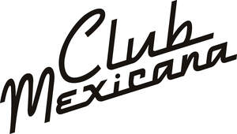
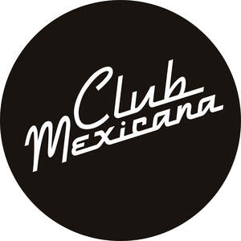

Trade Mark Journal No.2025/021 23 May 2025
UK00004193363 23 April 2025 (16,18,21,25,29,30,32,43)
Mark 1
Mark 2

Mark 3

- Class 16
- Printed instructional and teaching materials in the field of food, cooking, recipes, home and lifestyle; Books in the field of food, cooking, recipes, home and lifestyle; Recipe books; Printed recipe cards; Printed recipe cards based on instructions to cook vegan mexican recipes; Cook books; Cook books in the field of vegan Mexican cuisine; Printed menus; Book covers; Book marks; Magazines in the field of food, cooking, recipes, home and lifestyle; Newspapers in the field of food, cooking, recipes, home and lifestyle; Newsletters in the field of food, cooking, recipes, home and lifestyle; Printed periodicals in the field of food, cooking, recipes, home and lifestyle; Pamphlets in the field of food, cooking, recipes, home and lifestyle; manuals in the field of food, cooking, recipes, home and lifestyle; catalogues in the field of food, cooking, recipes, home and lifestyle; Printed charts in the field of food, cooking, recipes, home and lifestyle; Posters; Photographs; Prints; Pictures; Paper napkins; Paper tablecloths; Coasters made from cardboard or paper; Paper place mats; Paper and plastic bags for packaging and rubbish; Cookery books.
- Class 18
- All-purpose carrying bags for shopping; Bags (Net -) for shopping; Canvas shopping bags; Carry-all bags for shopping; Carrying bag for shopping; Grocery tote bags; Net bags for shopping.
- Class 21
- Cooking utensils, non electric; Bottle openers; All-purpose portable household container; Bakeware; Baking dishes; Beer mugs; Beer pitchers; Beer glasses; Cooking pots and pans; Cookware and tableware, except forks, knives and spoons; Dishes; Drinking straws; Flasks; Fruit bowls; Knife boards; Knife blocks; Glassware; Travel mugs; Bags for microwave cooking.
- Class 25
- Chefs' whites; Overalls; Aprons; Clothing; Headwear; Headgear; Footwear.
- Class 29
- Fruit Snacks; Potato Snacks; Guacamole; Tofu-based snacks; Milk alternative-based snacks; Nut-based snack foods; Bean-based snack food; Soya-based snack food; Vegetable-based snack foods; Coconut-based snacks; Nut butter; Vegan-based snack foods; Coconut oil for food; Seasoned nuts; Cacao butter for food; Roasted nuts; Spiced nuts; Organic coconut oil for culinary purposes; Flavoured nuts; Edible nuts; Nuts being cooked; Dried nuts; Prepared nuts; Nuts, prepared; Ground nuts; Seed butters; Fruit snacks; Roast nuts; Processed nuts; Edible seeds; Candied fruit snacks; Snack food (Fruit-based -); Nuts being preserved; Processed edible seeds; Ready cooked mexican vegan meals; Frozen mexican prepared vegan meals; Pre-cooked mexican food such as tacos, nachos, quesadillas and burritos; Ready cooked vegan meals; Frozen prepared vegan meals; Pre-cooked meals; Frozen plant-based meals; Plant-based meat substitutes; Vegan and vegetarian meat products; Meat substitutes; Prepared meals consisting primarily of meat substitutes; Ready cooked meals consisting primarily of meat substitutes; Plant-based snack foods; Seitan [meat substitute]; Jackfruit-based prepared meals; Salads; Vegan dips; Prepared meals and snacks for human consumption but not included in other Classes; Plant-based burritos, tacos and nachos; Vegan and vegetarian burritos, tacos and nachos; Burritos, tacos and nachos filled and topped with plant-based meat substitutes; Canape meat substitute burritos, tacos and nachos; Pulse-based pre-cooked meals; Pulses, prepared; Pulses, preserved; Pulses prepared for human consumption; Refried beans; Prepared beans; Pinto beans; Bean dips; Processed avocados; Prepared meals and snacks based on mashed or processed avocados.
- Class 30
- Condiments; Pico de Gallo; Sauces; Seasonings; Processed herbs; Relishes; Savoury sauces; Foodstuffs made from dough; Sweet glazings and fillings; Frozen prepared foodstuffs; Frozen burritos, tacos and nachos; Canapes; Canape burritos, tacos and nachos; Frozen confections; Frozen pastries; Spice mixes; Spice preparations; Spice rubs; Ready to eat savory snack foods made from dough; Prepared desserts; Rice products for food, including rice-based snack food; Frozen prepared rice with seasonings and vegetables; Rice dishes; Boxed lunches consisting primarily of rice; Frozen vegan burritos, tacos and nachos; Biscuits (cookies); Cakes and edible decorations for cakes; buns, pancakes, tarts, waffles; Popcorn; Puddings; Mexican (ethnic) sweets and desserts; Cooking sauces and cooking pastes; Preparations for making sauces; Mexican (ethnic) savouries and snacks; Flavourings made from fruits or vegetables; Soya products in this class, including beverages containing soya, soya bean paste, soya-based ice cream, soya flour and soya sauce; Pastry-based snacks being vegan and filled with meat substitutes all frozen, chilled or at ambient temperature; Rice flour-based snacks, Beverages made of tea or coffee; Beverages containing ice-cream, chocolate, cocoa, coffee or tea .
- Class 32
- Beers; Beer and brewery products; Craft beer; Beer-based beverages; Low-alcohol beer; Fruit-based beers; Fruit sodas; Drinking waters, flavoured waters, mineral and aerated waters; Aerated fruit juices; Beverages consisting of a blend of fruit juice and beer; Non-alcoholic beverages; Carbonated non-alcoholic drinks; Extracts for making beverages; Fruit flavoured carbonated drinks; Fruit-based beverages and fruit-based sodas; Non-alcoholic beverages containing fruit extracts .
- Class 43
- Services for providing food and drink; food and drink takeaway services; Self service restaurants; Snack bars; Public house, micro-pub, cocktail bar, wine bar, bar, hotel, restaurant, canteen, cafe and cafeteria, banqueting and catering services; Organisation of and provision of facilities for conferences, weddings, meetings and events; Arranging of meals in public houses and/or hotels; Booking and reservation services; Restaurant services; Provision of venues for conferences, meetings, weddings and events; Mobile catering services; Providing food and drinks via mobile truck; Pop-up street food restaurant and catering services; Restaurant services provided via mobile food carts; Advice concerning cooking recipes. .
Meriel Armitage
Representative: Trademark Brothers Ltd.